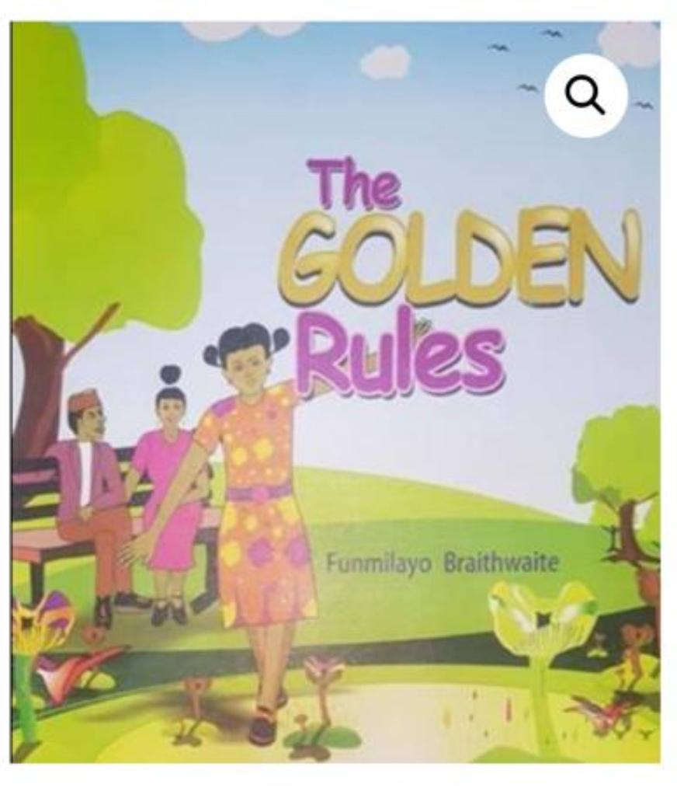
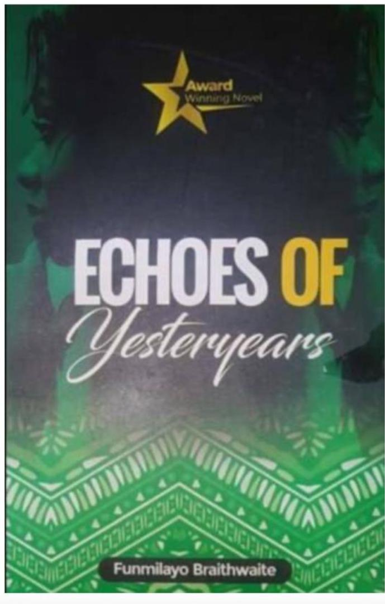
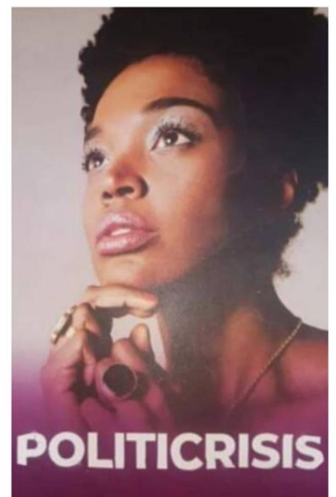
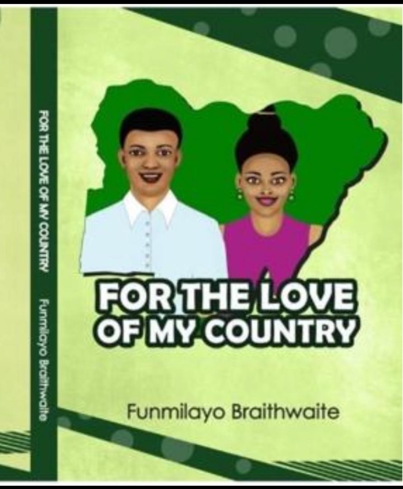
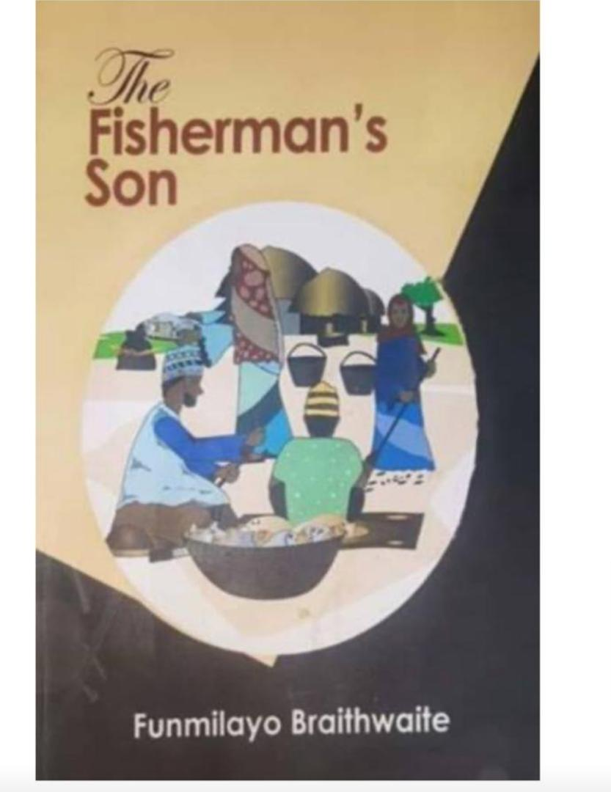
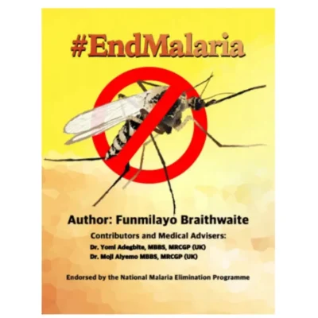
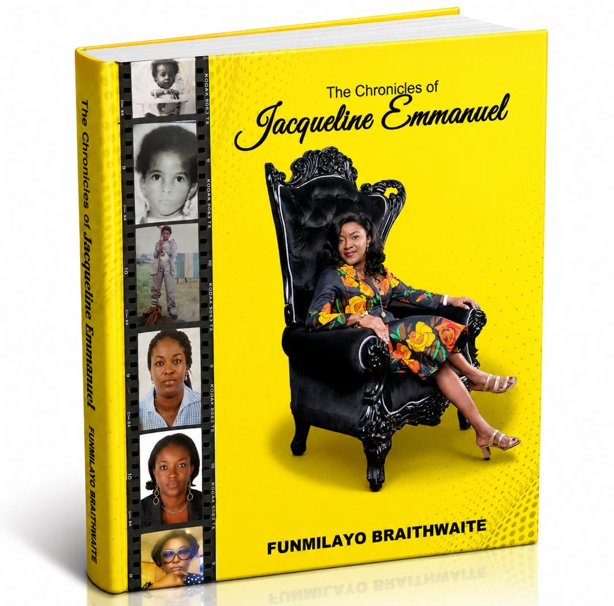
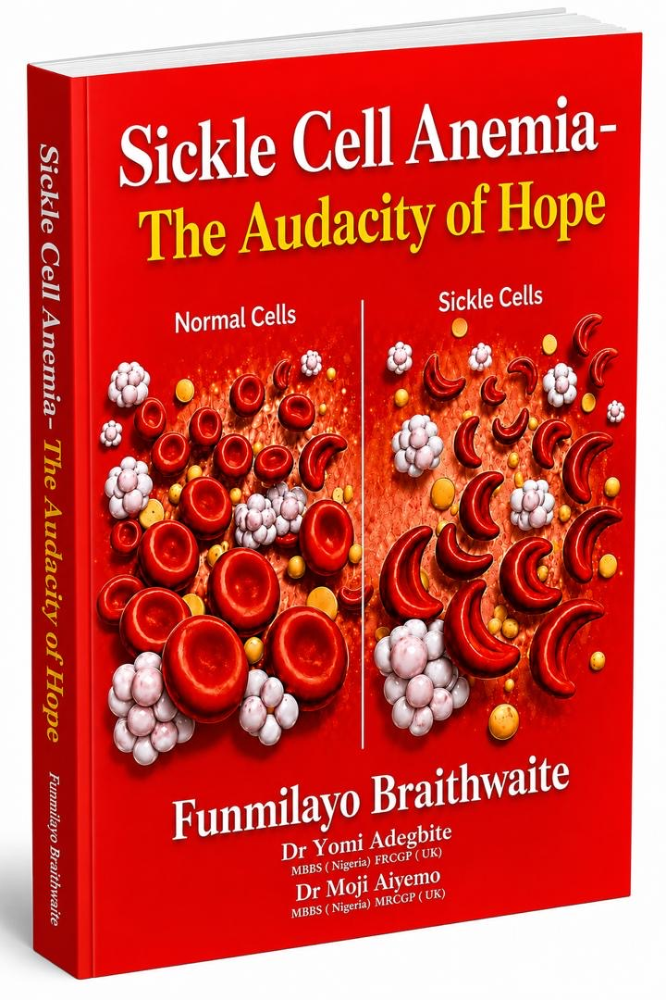
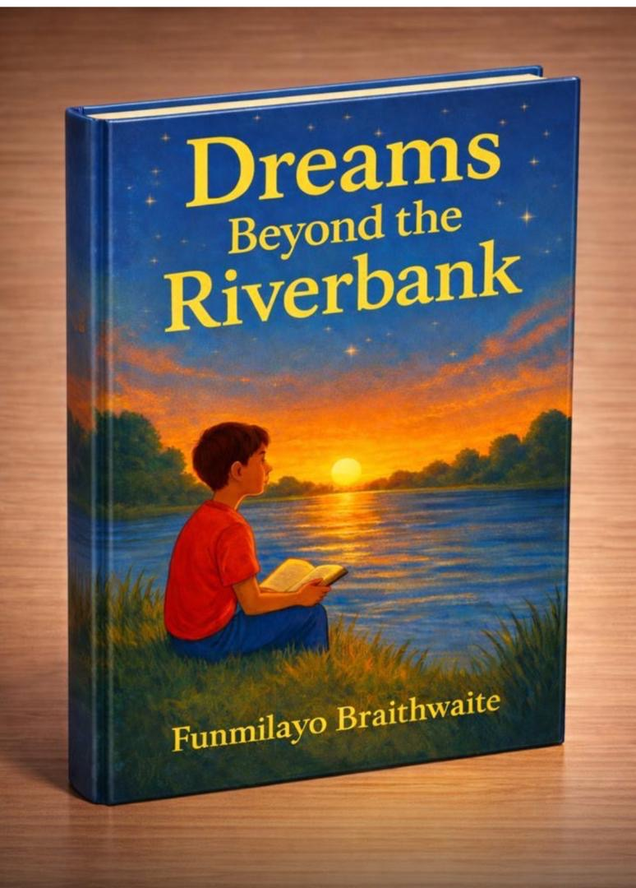

Her Works

The Path Of Fate
NGN5000
Tells the compelling story of Pauline and Paul Edwards as they strive to live their dreams and make their voices and opinions heard. The Path of Fate is aimed at getting our youth more informed as they make career decisions

The Golden Rules
NGN6,500
A peep into Amber's very exciting world and the famous golden rules. The Golden Rules empowers children to fight against child molestation, bullying and drug abuse. It enlightens children about taking security measures to ensure that they are protected from harm. The Golden Rules also assures children that it is absolutely alright to discuss all issues with their parents and most importantly, they should report any unusual or uncomfortable behaviour immediately.

ECHOES OF YESTERYEARS
NGN10,500
Centred on the theme of ruthlessness, total unadulterated greed, treachery, vengeance and extreme obsession, Echoes of yesteryears uncovers a rapid sequence of breath-taking revelations, resulting in a breeze of silent mystery. Echoes of yesteryears is a past winner of the Association of Nigerian Authors (ANA)/ Spectrum award for literature.

POLITICRISIS
NGN8,000
Tells the enthralling story of Nkechi Eke as she struggles to stay afloat, the political regime. Her integrity. her marriage, her political career and asecret from her past fight for supremacy in her very troubled world. Nkechi is determined to win this battle. Will she be triumphant or will she drown in her overwhelming circumstances?

FOR THE LOVE OF MY COUNTRY
NGN7,000
This is a citizen's pledge to be a patriotic Nigerian at all times. An affirmation of a citizen's commitment to the growth and development of Nigeria. A commitment to join hands to build a better Nigeria. A commitment to be a good ambassador of Nigeria at home and abroad. Change begins with me.

THE FISHERMAN'S SON
NGN5,000
Mallam Garba and his closely knit family are an example of a family with great family values and contentment. Yahaya and Maryam are determined to change the world and make Nigeria a better place for all to live in. Yes, they dare to dream..

#ENDMALARIA
NGN9,500
#Endmalaria tells the story of Kamal, a twelveyear-o schoolboy, as he fights the dreaded malaria ailment. #ENDMALARIA conscious effort at health promotion in society, targeting younger peo Malaria can kill, so kill malaria

BONDS OF DESTINY
NGN8,000
A celebration of love over the challenges of life created by man and forces beyond him. Olabode Coker and Pamela Davies are two amazing youngsters who fell in love. Their love waxed stronger until it was brought under great scrutiny. Will their unquenchable love for each other stand the test of time or will they be torn apart by the powers that be?

Chronicles Of Jacqueline
NGN8,000
THE CHRONICLES OF JACQUELINE EMMANUEL is the memoir of the author (Funmilayo Braithwaite) . It is the comical adventures of Jacqueline Emmanuel from birth to adulthood. Her biography embedded in a hilarious ocean of words.

Sickle Cell Anemia-The Audacity Of Hope
NGN14,000
The Audacity of Hope provides a clear, insightful, human- centered understanding of the condition- its causes, symptoms, management and the social and emotional challenges faced by individuals and families living with this condition.

Dreams Beyond The Riverbank
NGN6,000
(An adaptation of The Fisherman’s Son) is inspired by the resilience of ordinary Nigerian families who, despite limited means, raise their children with integrity, hope, and a strong belief in a better future.